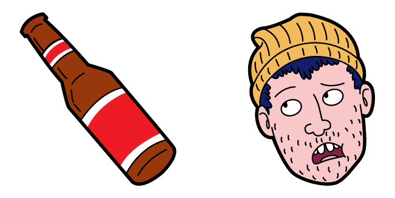

SOBRE BOJACK HORSEMAN
BoJack Horseman es una serie de televisión animada de Netflix, que se estrenó originalmente el 22 de agosto de 2014. Sigue a BoJack, un caballo antropomorfo que solía protagonizar la popular serie de televisión ficticia de los años 90, Horsin' Around. Dieciocho años después, la fama de BoJack se ha desvanecido. La serie narra la historia de BoJack intentando reavivar su fama escribiendo unas memorias reveladoras, y también documenta todas las maravillosas metidas de pata y situaciones extrañas en las que él y sus amigos se encuentran en la parodia ficticia de Hollywood, "Hollywoo" (la letra "D" fue destruida en la serie).
